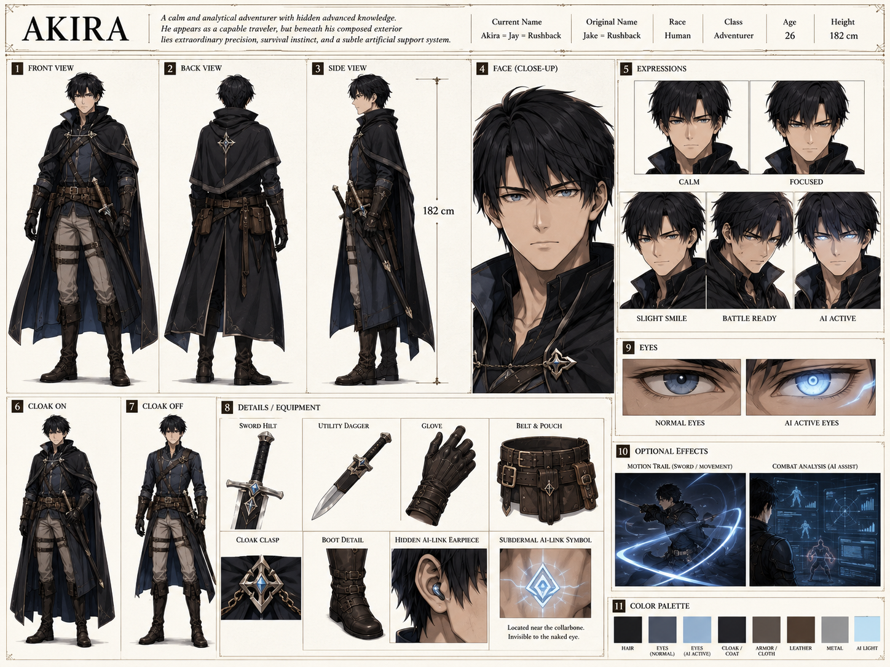

魔法と科学が交差する世界——。
未来技術を持つ異世界人が、幻想の大陸に降り立つ。
「幻想科学のプロローグ」公式世界観資料館へようこそ。
7+
キャラクター
4
大陸・国家
2
ギルド
13+
種族
10+
用語
3
ギャラリー
はじめに
宇宙暦872年。シュトライゼル共和国軍少佐ジェイク＝ラッシュバックは、時空コントロールシステムの異常により惑星ノアごと多元的な別次元宇宙へと転移する。
彼が目覚めたのは、魔素と呼ばれる謎のエネルギーが満ちる異世界——。そこには魔法があり、エルフがいて、ダンジョンがあった。
精神汚染による人格再構成を経て、彼は「アキラ＝ジェイ＝ラッシュバック」として生きることになる。
彼が目覚めたのは、魔素と呼ばれる謎のエネルギーが満ちる異世界——。そこには魔法があり、エルフがいて、ダンジョンがあった。
精神汚染による人格再構成を経て、彼は「アキラ＝ジェイ＝ラッシュバック」として生きることになる。
本サイトについて
小説「幻想科学のプロローグ」の設定資料館です。上部メニューからキャラクター・世界設定・ギルド制度・用語集などをご覧いただけます。
キャラクター
アキラ
エマ
アル
序盤パーティ
導きの輪環
その他NPC
プロフィール
詳細設定
戦闘

アキラ＝ジェイ＝ラッシュバック
本名：ジェイク＝ラッシュバック
年齢26歳
身長182cm / 76kg
瞳青灰（AI時：発光）
武器片手剣
出身シュトライゼル共和国
階級少佐
「頭はSF、心はファンタジー」。超未来技術で最適化された美しい肉体とAIに支えられた異質な戦闘力を持ちながら、本人は「ちゃんと生きて、ちゃんと暮らしたい」という感覚を捨てていない。
世界設定
大陸と国家
魔法と魔素
種族
龍脈とダンジョン
貨幣・暦
世界の4大陸
デア＝グラント
北半球中央. 東西に長い政治・人口の中心大陸. 中央山脈（グランヴェイル大山脈）が東西を分断. ラムール王国（東）とオーブリン連邦（西）が覇権争い.
ツェントルム
西方の南北大陸. 地表は荒野・砂漠だが地下に巨大文明圏. 龍脈が地下空洞を拡張し各地で地下都市を形成. ドワーフ国家が中核.
ルフォレスフューテ
南東の森と山岳大陸. 3/5が大森林、2/5が険しい山岳. エルフのルザリス帝国とビーストのティエン王国が存在. 物語の主舞台.
魔大陸
南半球の荒廃大陸. 龍脈が地表に剥き出し. 世界最大のダンジョン密集地. ガルス残滓の本拠地候補. 安定した国家は現時点で存在しない.
主要国家
ラムール王国
ヒューム至上主義・奴隷制・精神汚染された王. 冒険者ギルドが撤退済み. デア＝グラント最大の火薬庫.
オーブリン連邦
多民族連合. 商人・冒険者・ギルドの発言力が強い自由側. 冒険者ギルド本部はここに置く.
ルザリス帝国
エルフの森林帝国. 皇統接続者制度・古代遺跡・魔法文明. 首都レグリス. エマの出身地.
ティエン王国
ビーストの山岳王国. 身体能力と戦士文化. エルフと長い敵対史. 国王は百獣王レレベルガンザ（Sランク）.
エイゼンハイム王国
ドワーフの地下国家. オアシス・ダンジョン中心. 鍛冶・鉱山・地下建築の職人国家. 国王はSランク冒険者ゴンドワナ.
リブル共和国
港湾小国家. 港町ペドラメ. 多種族混成・次大陸への玄関口. 商業ギルド本部がここに置かれる.
ヴュステンルーエ
ツェントルム北部の砂漠交易町. 法が弱く実力と金がものを言う. 諜報・裏社会・追跡劇の舞台.
サルセン王国
小人族の王国. ツェントルム南部. 器用さと持久力が武器. 外交においてしたたか.
魔素（マソ）とは
この別次元宇宙に遍在する高次位相性を持つ基底粒子／場の励起. 粒子・場・情報媒体・次元間干渉媒体の四つの性質を同時に持つ. 地下では「龍脈」として巨大な流れを形成し、地表の気候・植生・魔物の発生に大きな影響を与える.
魔素の基本特性（作者用設定）
電子置換性
一定条件下で電子に置き換わるように振る舞う. 化学結合・発光・発熱・金属性質に関与する.
ニュートリノ置換性
深部浸透・生体内部への干渉・神経・遺伝子発現への影響が可能. 長期的な生体変質を引き起こす.
情報保持性
状態・構造・パターンを保持しやすい. 魔石・クリスタル・ジョブマテリア・石碑が記録媒体になる理由.
反応閾値操作性
物質や生命の反応しやすさそのものを変える触媒的働き. 魔法・回復・レベルアップ・錬金が成立する原理.
位相固定性
一度生じた現象・境界を一定時間固定する性質. 結界・バリア・空間圧縮・古代遺跡の異常保存に関わる.
魔法とは
魔素を脳内イメージ・スロット器官・結晶・術式・詠唱によって整形・流動・共鳴させ、現象として発現させる技術体系. 詠唱は「脳内イメージと魔素制御を安定化する同期プロトコル」に近い. 上級者ほど無詠唱でも成立する.
属性分類
火・水・風・土・光・闇・時空. 現地人は経験則と伝承で運用. 作者設定では「魔素がどの交差次元へ優先共鳴するかの分類」である.
トランスレイスとクリスタル
体内にスロット器官を持ちクリスタルを安全に扱える者をトランスレイスと呼ぶ. 全ヒト族の約1/1000程度. ジョブマテリアの職位によりC〜S級に分類される. レベル上昇・スキル取得によって覚醒し上限が上がることがある.
ヒト族（通常種）
ヒューム（人間）
世界人口の約50%. 知力・器用さが高い. トランスレイス発生率は最低. 平均寿命67才.
エルフ
約10%. 長命（300〜500才）で魔法親和性が高い. 繁殖力が低く保守的. 社会的成人は50才.
ドワーフ
約10%. 筋力・技術力が高く暗所視が発達. 平均寿命150才. 戦の神派と技術の神派が対立.
小人族
約5%. 器用さ・敏捷性に優れる. 平均寿命62才. 農耕・調合・細工技術が卓越.
ビースト
約8%. 筋力・敏捷性・感覚が非常に高い. 魔力は極めて低い. 平均寿命70才.
ワーウルフ
約6%. 持久力・嗅覚が突出. 群れの絆が強い. 長距離追跡・偵察を担う者が多い.
ハイリザード
約6%. 鱗による防御力が高い. 統一国家なし. 部族・氏族単位. 平均寿命50才.
ヒト族（希少種）
龍人族
伝説的希少. 魔力圧倒的最高. 体内に魔核を持ち核が傷つくと崩壊. 平均寿命1000年とも.
デーモン
魔大陸生息. ガルス残滓がDNAとして定着した生命体. 最もガルス残滓を収束させた個体が「魔王」となる.
鬼人族
ルフォレスフューテ最南端. 角・異色の肌. 戦神・死神への信仰. 強く死ぬことを美徳とする文化.
ハーピー
デア＝グラント険山南方. 背面から翼が生え、腕・手は別に存在. プシュケー商会のみ交易関係を持つ.
マーフォーク
深海・外洋に生息. 腰から下が魚型の尾ひれ. 水属性魔法親和性が高い. ペドラメとの限定的接触あり.
巨人族
ツェントルム中央山間部. 身長3〜4m. 文明は未発達. ドワーフとたまに交流がある極少数種.
ハーフブラッドと社会的扱い
異種族間の交配で両親双方の特徴が混ざった稀少個体. 発生確率は低い. ラムール王国では「穢れた血」として最底辺に置かれる. オーブリン連邦では制度的差別は少ないが社会的偏見は残る.
主要亜人族
ゴブリン
最多個体数. 群れで戦術的行動をとる. 繁殖力が非常に高く駆除が困難. 最もヒト族から忌み嫌われる.
オーク
中〜大型. 猛突進型の高い戦闘力. ゴブリンと並んで危険視される. ゴブリンと混在して行動することも.
オーガ
大型（250〜320cm）. 単体破壊力はオークをはるかに超える. 魔石は大型で品質が高い.
トロル
強力な再生能力を持つ. 火・酸・光属性攻撃が再生を阻害. 通常兵器では倒せない厄介な存在.
ミノタウロス
牛頭人身. ダンジョン深層に好んで生息. 嗅覚に優れ侵入者を察知. 冒険者の重要な収入源.
サイクロプス
一つ目の巨大亜人族（350〜430cm）. 巨体の打撃は城壁を砕く. 非常に大きく高品質の魔石を持つ.
龍脈とは
地下深くで魔素が巨大な流れとなって循環する惑星規模の魔素循環網. 地表の気候・植生・魔物の発生・鉱物資源・生態系に大きな影響を与える. 国や都市の成立も多くが龍脈の影響下にある.
ダンジョンとは
龍脈から魔素が噴出・滞留するホットスポット. 地下迷宮型・洞窟型・森林迷宮型・遺跡融合型・砂漠オアシス型・湿地湖沼型など様々な形態を持つ. 魔石・希少鉱物・霊薬素材の産出源でもあり、「災厄と資源」の両面を持つ.
ダンジョン周辺で起こりやすいこと
魔物の高密度発生 / 魔石・希少鉱物・霊薬素材の産出 / 局所的な気候異常 / 植生の巨大化・特殊化 / 空間や地形の歪み
注目ダンジョン
オアシス（ツェントルム）
地下なのに柔らかな光・豊富な水・植生を持つ特殊空間. 龍脈の巨大噴出口. ドワーフ文明の心臓部. 常に資源の恵みと魔物の両方を吐き出す.
魔大陸全域
世界最大のダンジョン密度. 龍脈が地表に剥き出し. 魔素嵐・異常地形・巨大魔物・変異植生が多い. ガルス残滓の本拠地候補.
貨幣体系
銅貨（1ガルド）約150円
大銅貨（10ガルド）約1,500円
銀貨（100ガルド）約15,000円
小金貨（2,000ガルド）約30万円
大金貨（40,000ガルド）約600万円
ミスリル貨（400,000ガルド）約6,000万円
暦・時間
1日24時間（地球換算では約25.2時間）/ 1年360日 / 5年に一度うるう年（361日）
組織・制度
冒険者ギルド
商業ギルド
基本概要
国家を越えた国際独立組織. 本部はオーブリン連邦. 国家からの完全独立にこだわり補助金を受け取らない. 魔物討伐・ダンジョン探索・護衛・採取依頼の仲介が主な役割. 国家間の戦闘行為には完全不介入.
冒険者ランク一覧
| ランク | 名称 | ギルド証 | 概要 |
|---|---|---|---|
| F | 見習い | 紙（仮登録） | 雑用・補助のみ. ダンジョン立入禁止. |
| E | 駆け出し | 木のプレート | 採取・伝令・ポーター. 魔物討伐依頼なし.「石なし」と揶揄. |
| D | 一人前 | 魔石付き鋼 | ここから魔力紋登録. 戦闘任務解禁. 身分証として機能. |
| C | 中堅 | 魔石付き銅 | 緊急依頼（スタンピード）の強制参加対象. |
| B | 上位 | 銀 | 統括支部への推薦・審査が必要. 高い信用. |
| A | 高位 | 金 | 本部で最終審査. 降格なし. 別格の信用. |
| S | 伝説 | ミスリル | 歴史上数名のみ. 新規発行は世界的大事件レベル. |
Sランク現存者
イアン＝ギュネイス
現役登録済み. Aランク冒険者20〜30人を瞬殺できる隔絶した実力. 黒騎士.
百獣王レレベルガンザ
現役登録済み兼ティエン王国国王. 周囲に迷惑をかけながら実力で黙らせるタイプ.
冒険王ゴンドワナ
現役登録済み兼エイゼンハイム王国国王. 政務はこなすが本人は冒険に行きたがっている.
ジュンヒョク（龍人族）
事実上引退・生息域に帰還. C級から長年かけて何度も覚醒した稀有な人物.
ギャラリー
ロゴ
アキラ設定画
エマ設定画
タイトルロゴ「幻想科学のプロローグ」— 星・月・歯車・回路が融合したデザイン
アキラ＝ジェイ＝ラッシュバック 設定画（Standard Ver.）
エマ＝ロベール（エメリア＝リーン＝ザウ＝フェルグレイス）設定画
用語集
魔素（マソ）世界
世界に満ちる根源エネルギー. すべての魔法の触媒. 龍脈として地下を巡り地表環境に影響を与える. 粒子・場・情報媒体・次元間干渉媒体の四つの性質を同時に持つ.
龍脈（りゅうみゃく）世界
地下深くで魔素が巨大な流れとなって循環する惑星規模の魔素循環網. 国や都市の立地にも影響する.
術式（ジュツシキ）魔法
魔素を特定の形に変換するための手順・公式. アキラはプログラムとして捉え理解を深めていく.
トランスレイス魔法
体内にスロット器官を持ちクリスタルを安全に扱える者. 全ヒト族の約1/1000. 覚醒によってランクが上がることがある.
精神汚染重要
アキラの人格再構成の原因. ラムール王国国王の異常行動の真相でもある. 世界の歪みに深く関わる現象.
ガルス残滓重要
宇宙歴時代の敵対勢力「ガルス軍」の残骸. 亜人族の体内魔石を媒体として利用し敵対行動を引き起こす.
更新履歴
2026-05-06データベース大幅拡充（コントラスト調整版へ修正）更新
2026-04-25設定資料館 公開NEW